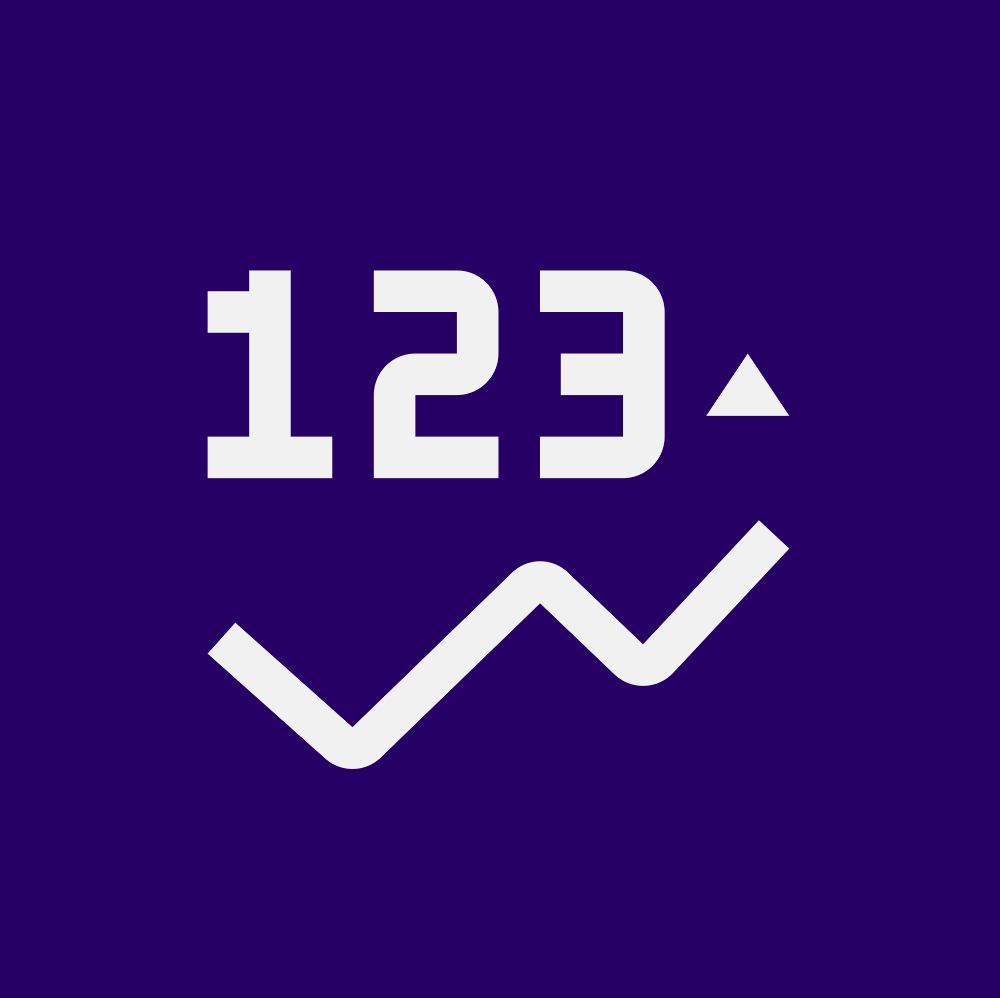
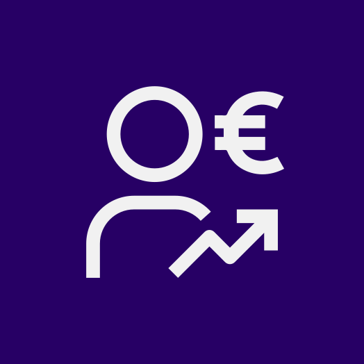

01
Shock di domanda
Si identifica la variazione esogena della domanda finale innescata dall'evento: spesa aggiuntiva o mancata, investimenti, commesse, consumi o acquisti pubblici. Questo impulso iniziale entra nel modello come shock.
Ogni analisi d'impatto segue lo stesso protocollo: una variazione esogena di spesa si propaga nella SAM e viene letta su cinque indicatori confrontabili. Quando la domanda è la convenienza, il percorso prosegue: prezzi ombra, analisi costi-benefici, ritorno sociale.
Tre fasi, sempre le stesse: dall'impulso iniziale di spesa alla lettura degli effetti su tutta l'economia.
Si identifica la variazione esogena della domanda finale innescata dall'evento: spesa aggiuntiva o mancata, investimenti, commesse, consumi o acquisti pubblici. Questo impulso iniziale entra nel modello come shock.
La matrice di Leontief propaga lo shock lungo la struttura produttiva e i circuiti di reddito. La domanda attiva i settori coinvolti, la filiera dei fornitori e i ritorni verso famiglie e sistema pubblico, generando effetti diretti, indiretti e indotti.

03Gli impatti settoriali vengono tradotti in valori assoluti e letti su cinque indicatori complementari: PIL, valore della produzione, redditi, occupazione e gettito fiscale.
Lo stesso set di cinque indicatori permette di confrontare scenari, settori e orizzonti temporali differenti senza ambiguità interpretative.
Il valore aggiunto complessivo generato. Misura la ricchezza effettivamente creata, evitando le duplicazioni del solo output lordo.
VA = Output - Consumi intermedi
L'output lordo attivato lungo tutta la filiera, inclusi i passaggi intermedi. Più ampio del PIL, descrive il volume totale di attività messa in moto.
Output = Domanda finale + Intermedi
Salari e redditi misti da lavoro autonomo. La quota di valore aggiunto che si trasferisce alle persone, alimentando poi gli effetti indotti.
Redditi = Salari + Redditi misti

Le unità equivalenti a tempo pieno (ETP) associate all'attivazione economica. Derivate applicando i coefficienti lavoro/output delle tavole ISTAT.
ETP = Output x coeff. lavoro/output
Le entrate aggiuntive per l'erario: imposte dirette, IVA, contributi previdenziali e imposte indirette sulla produzione.
Gettito = Imp. dir. + IVA + Contributi
SAM · Shock · Effetti diretti, indiretti e indotti
L'impatto misura quanto si attiva; la valutazione stabilisce se ne vale la pena e per chi. I fattori di conversione derivano dalla stessa SAM: il percorso prosegue senza cambiare base dati.
I flussi finanziari vengono corretti con i fattori di conversione derivati dalla SAM: al netto di imposte e distorsioni, conta il costo-opportunità per la collettività. Le esternalità ambientali e sociali entrano nel conto, monetizzate.
Benefici e costi, attualizzati al tasso sociale di sconto, si sintetizzano in tre misure: VANE, TIRE e rapporto B/C. L'analisi di rischio e sensitività ne verifica la robustezza.
Gli outcome per gli stakeholder vengono monetizzati con proxy finanziarie, al netto di effetti inerziali e attribuzione: il rapporto SROI esprime il valore sociale generato per ogni euro investito.
Costi-benefici · Prezzi ombra · Valore sociale
Due pagine dedicate entrano nel dettaglio: il modello SAM con i suoi moltiplicatori; fattori di conversione, tasso sociale di sconto, principi e proxy dello SROI.
La metodologia è la stessa in ogni studio: gli stessi indicatori, la stessa base dati, risultati confrontabili tra settori e territori.
Esplora gli studi